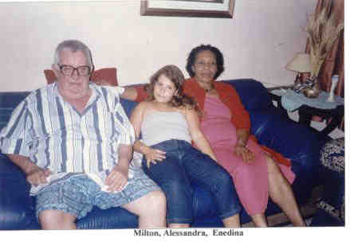
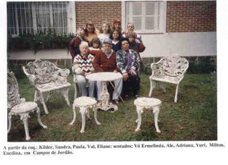

Milton Petrella
- Nascido em: 9 Jan 1932, Sp, Sp
- Casamento: Horondina Silva em 24 Abr 1954
- Falecido: 30 Jan 2000, Sp, Sp com 68 anos de idade

 Eventos notáveis em Sua vida foram: Eventos notáveis em Sua vida foram:

(Clique na Foto para vê-la no Tamanho Original)")
• fotos: Clodoaldo e Milton na rua Francisco Dias Velho.

(Clique na Foto para vê-la no Tamanho Original)")
• fotos: Clodoaldo - Pedro -Milton.

• fotos: Milton - Alessandra e Enedina.

• fotos: vó Ermelinda - Milton - Enedina em Campos do Jordão.
Milton casad[:o::a] Horondina Silva em 24 Abr 1954. (Horondina Silva nasceu em em 17 Jun 1931 em Santa Rita Do Sapucai - Mg.)
|


(Clique na Foto para vê-la no Tamanho Original)")